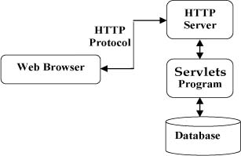

Java Servlet是运行在Web服务器或者应用服务器上的程序，用来处理http请求，是http客户端如浏览器与服务器数据库或者应用程序之间的中间层。使用servlet，服务器可以收集来自网页表单的用户输入，可以动态创建网页，将数据库数据或其它服务器提供的信息展示给用户，可以实现CGI（Common Gateway Interface，公共网关接口）的功能。
所有的java web框架的底层都是servlet，各个框架在其基础上进行了封装，添加了各种新特性。
servlet在web应用系统中的位置，可以用下图来表示：

生命周期
servlet的生命周期是指其从创建直至销毁的整个过程，包括以下几个阶段：
Servlet通过调用init()方法来进行初始化；
Servlet通过调用service()方法来处理客户端的请求；
Servlet通过调用destory()方法来销毁；
Servlet由JVM的垃圾回收器进行垃圾回收；
init()方法
在一个Servlet生命周期，init()方法只能被调用一次，在第一次创建Servlet时被调用，在后续每次用户请求时，不再被调用；当用户调用一个Servlet时，就会创建一个Servlet实例，每一个用户请求都会产生一个新的线程，适当的时候交给doGet或者doPost方法，除第一次外，后续的请求都不会再执行init()方法。init()方法简单的创建或加载一些数据，这些数据将被用于Servlet的整个生命周期。
public void init() throws ServletException{
//创建加载数据
}
service()方法
service方法是实际处理请求任务的主要方法。Servlet容器即web服务器调用service()方法来处理客户端的请求，并把格式化的响应写给客户端。
每次服务器收到一个Servlet请求时，服务器会产生一个新的线程并调用服务，service()方法检查http请求的类型（GET, POST等），并在适当的时候调用doGet, doPost, doPust等方法。
public void service(ServletRequest request, ServletResponse response)
throws ServletException, IOException{
}
需要注意的是，service()方法由容器调用。
destory()方法
跟init()方法一样，destory()方法只被调用一次，在Servlet生命周期结束时调用，该方法可以让Servlet关闭数据库连接，停止后台线程，把cookie列表或者点击计数器写入磁盘，并执行其他类似的清理活动。
public void destory(){
//清理servlet
}
servlet的生命周期如下图所示：

servlet实例
运行一个servlet实例，有两种方式：
1）web.xml配置
配置web.xml
<web-app>
<servlet>
<servlet-name>helloworld<
<servlet-class>net.ting.servlet.HelloWorldServlet</servlet-class>
</servlet>
<servlet-mapping>
<servlet-name>helloworld</servlet-name>
<url-pattern>/hello</url-pattern>
</servlet-mapping>
</web-app>
创建HellowWorldServlet，继承HttpServlet
public class HelloWorldServlet extends HttpServlet {
private String message;
public void init() throws ServletException{
message = "Hello world, Let's go!";
}
protected void doGet(HttpServletRequest request, HttpServletResponse response)
throws ServletException, IOException{
Enumeration params = request.getParameterNames();
response.setContentType("text/html;charset=UTF-8");
PrintWriter pw = response.getWriter();
pw.println("<h1>" + message + "</h1>");
}
}
2）使用@WebServlet注解
@WebServlet("/hello")
public class HelloWorldServlet extends HttpServlet {
private String message;
public void init() throws ServletException{
message = "Hello world, Let's go!";
}
protected void doGet(HttpServletRequest request, HttpServletResponse response) throws ServletException, IOException{
Enumeration params = request.getParameterNames();
response.setContentType("text/html;charset=UTF-8");
PrintWriter pw = response.getWriter();
pw.println("<h1>" + message + "</h1>");
}
}